Toán tử, vòng lặp và rẽ nhánh trong Java
Toán tử trong Java
Java cung cấp rất nhiều toán tử đa dạng để thao tác với các biến. Chúng ta có thể chia tất cả các toán tử trong Java thành các nhóm sau:
Toán tử số học
Toán tử quan hệ
Toán tử thao tác bit
Toán tử logic
Toán tử gán
Và các toán tử hỗn hợp
Toán tử số học trong Java
Các toán tử số học được sử dụng trong các biểu thức toán học theo cách tương tự như chúng được sử dụng trong đại số học. Bảng sau liệt kê các toán tử số học trong Java.
Giả sử biến A giữ giá trị 10, biến B giữ giá trị 20, thì:
Ví dụ
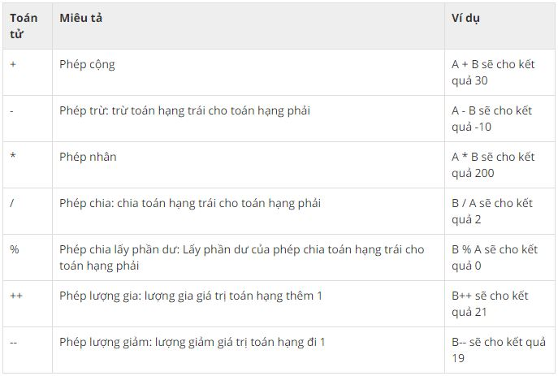Toán tử quan hệ trong Java
Bảng dưới liệt kê các toán tử quan hệ được hỗ trợ bởi Java.
Giả sử biến A giữ giá trị 10, biến B giữ giá trị 20, thì:
Ví dụ
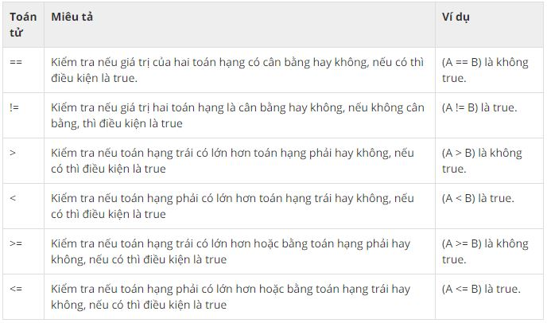Toán tử thao tác bit trong Java
Java định nghĩa một số toán tử thao tác bit có thể được áp dụng cho các kiểu giá trị integer, long, int, short, char, và byte.
Toán tử thao tác bit làm việc trên các bit. Giả sử nếu a = 60 và b = 13, thì trong định dạng nhị phân chúng sẽ như sau:
a = 0011 1100
b = 0000 1101
-----------------
a&b = 0000 1100
a|b = 0011 1101
a^b = 0011 0001
~a = 1100 0011
Bảng dưới đây liệt kê các toán tử bit được hỗ trợ trong Java:
Giả sử biến A giữ giá trị 60 và biến B giữ 13 thì khi đó:
Ví dụ
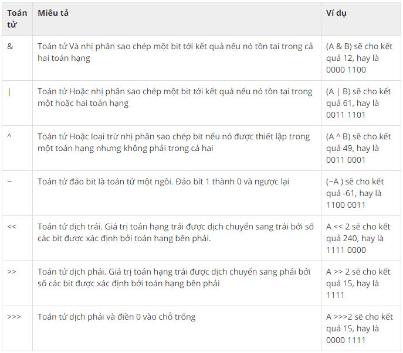Toán tử logic trong Java
Bảng dưới liệt kê đầy đủ các toán tử logic trong Java:
Giả sử biến A giữ true và biến B giữ false thì khi đó:
Ví dụ
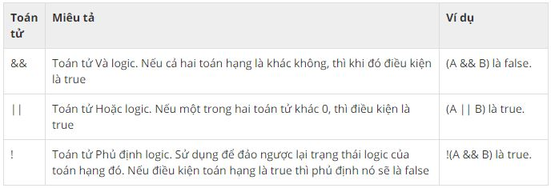Các toán tử gán trong Java
Dưới đây liệt kê các toán tử gán được hỗ trợ bởi Java:
Ví dụ
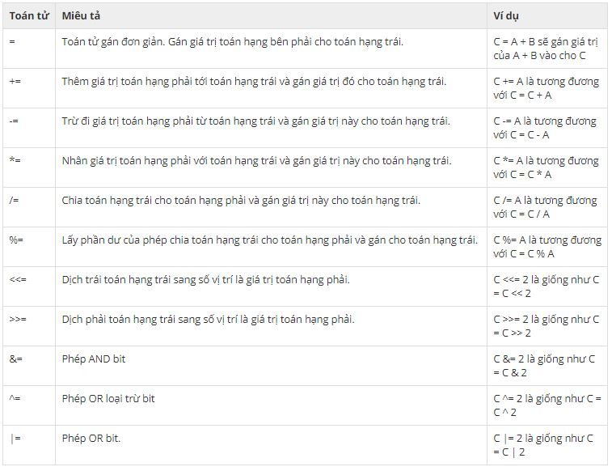Toán tử hỗn hợp trong Java
Ngôn ngữ Java cũng hỗ trợ một số toán tử hỗn hợp khác.
Toán tử điều kiện (? :)
Toán tử này gồm ba toán hạng và được sử dụng để ước lượng các biểu thức quan hệ. Mục tiêu của toán tử là quyết định giá trị nào sẽ được gán cho biến. Toán tử này được viết như sau:
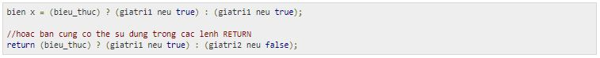Tất nhiên, bạn không cần thiết phải sử dụng các dấu ngoặc đơn như trên. Mình viết như vậy để giúp các bạn dễ nhìn hơn. Sau đây là ví dụ minh họa toán tử điều kiện (? :) trong Java:
Nó sẽ cho kết quả sau:
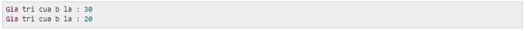Toán tử instanceof trong Java
Toán tử này chỉ được sử dụng cho các biến tham chiếu đối tượng. Toán tử kiểm tra có hay không đối tượng là một kiểu cụ thể (kiểu class hoặc kiểu interface). Toán tử instanceof được viết như sau:
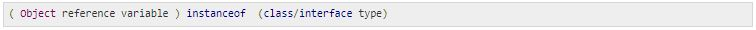Toán tử trả về true nếu toán hạng trái là biến thể hiện của toán hạng phải. Ví dụ:
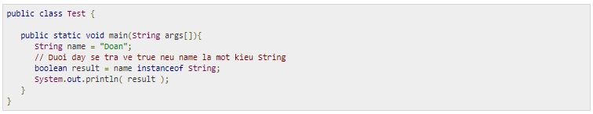Nó sẽ cho kết quả:
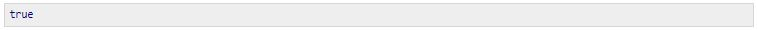Toán tử này sẽ cũng trả về true nếu đối tượng đang được so sánh là tham số tương thích với kiểu toán hạng phải. Dưới đây là một ví dụ khác:
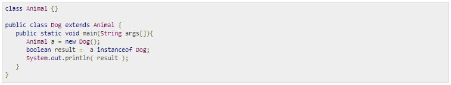Nó sẽ cho kết quả:
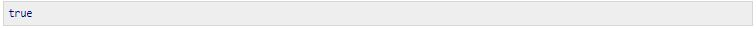Thứ tự ưu tiên của các toán tử trong Java:
Thứ tự ưu tiên của các toán tử xác định cách biểu thức được tính toán. Ví dụ: toán tử nhân có quyền ưu tiên hơn toán tử cộng.
Ví dụ, x = 7 + 3 * 2; ở đây, x được gán giá trị 13, chứ không phải 20 bởi vì toán tử * có quyền ưu tiên cao hơn toán tử +, vì thế đầu tiên nó thực hiện phép nhân 3 * 2 và sau đó thêm với 7.
Bảng dưới đây liệt kê thứ tự ưu tiên của các toán tử. Các toán tử với quyền ưu tiên cao nhất xuất hiện trên cùng của bảng, và các toán tử có quyền ưu tiên thấp nhất thì ở bên dưới cùng của bảng. Trong một biểu thức, các toán tử có quyền ưu tiên cao nhất được tính toán đầu tiên.
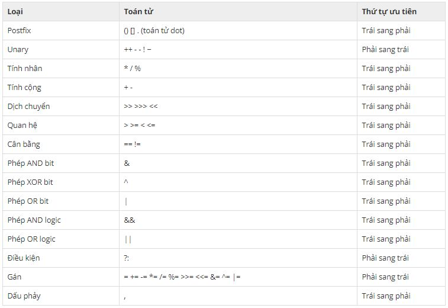Vòng lặp trong Java
Có thể có một tình huống khi chúng ta cần thực hiện một khối code một vài lần, điều này có thể được xem như một vòng lặp.
Java có 3 kỹ thuật lặp linh động. Bạn có thể sử dụng một trong ba vòng lặp sau:
Vòng lặp while
Vòng lặp do…while
Vòng lặp for
Trong Java 5, vòng lặp foreach (hay enhanced for) đã được giới thiệu. Vòng lặp này được sử dụng chủ yếu cho các mảng.
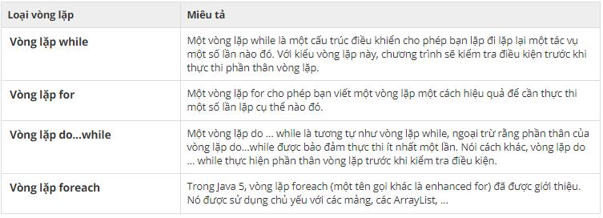Các lệnh điều khiển vòng lặp trong Java
Câu hỏi đặt ra là nếu giả sử trong một vòng lặp tại một điều kiện cụ thể nào đó, bạn muốn dừng thực thi hoặc tiếp tục thực thi vòng lặp đó, bạn sử dụng cách nào. Cũng như các ngôn ngữ lập trình khác, Java hỗ trợ các lệnh giúp bạn điều khiển và kiểm soát vòng lặp.
Bảng dưới liệt kê các lệnh được sử dụng để điều khiển vòng lặp mà Ngôn ngữ lập trình Java hỗ trợ:

Lệnh IF/ELSE, Lệnh SWITCH/CASE trong Java
Như các ngôn ngữ lập trình khác, ngôn ngữ Java cũng hỗ trợ cấu trúc điều khiển luồng. Với cấu trúc này, chương trình sẽ kiểm tra một hoặc nhiều điều kiện và nếu các điều kiện này là true, thì lệnh hoặc các lệnh tương ứng với điều kiện true này sẽ được thực hiện, nếu không thì các lệnh tương ứng với điều kiện false sẽ được thực thi.
Bảng dưới đây liệt kê các lệnh giúp bạn điều khiển luồng trong Java. Các lệnh đó là:
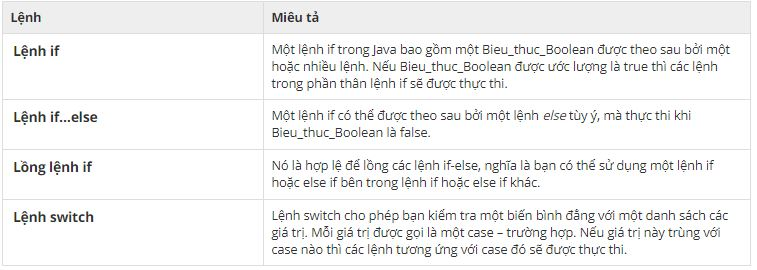Toán tử điều kiện (? :) trong Java
Ngoài các lệnh kể trên, ngôn ngữ Java còn có một loại toán tử điều kiện giúp bạn kiểm tra nhanh các điều kiện và thực hiện phép gán giá trị cho một biến một cách rất nhanh chóng.
Toán tử này gồm ba toán hạng và được sử dụng để ước lượng các biểu thức quan hệ. Mục tiêu của toán tử là quyết định giá trị nào sẽ được gán cho biến. Toán tử này được viết như sau:
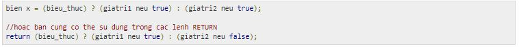Tất nhiên, bạn không cần thiết phải sử dụng các dấu ngoặc đơn như trên. Mình viết như vậy để giúp các bạn dễ nhìn hơn. Sau đây là ví dụ minh họa toán tử điều kiện (? :) trong Java:
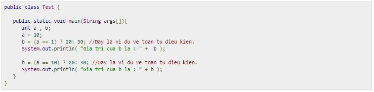Nó sẽ cho kết quả sau:
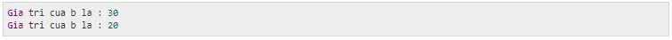Chương tiếp theo bàn về chủ đề gì trong Java?
...